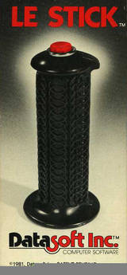

Le Stick
The first motion-sensitive game controller: a base-less wand that steers by a mercury core shifting in your hand

Overview
Le Stick was a video game controller released by DataSoft Inc. in 1981 for the Atari 2600 and Commodore 64, widely credited as the first motion-sensitive game controller — twenty-five years before the Nintendo Wii. DataSoft, a software house that had opened in 1980 and published its first title (Popcorn for the Tandy Color Computer) in 1981, followed with its first and only controller: a base-less wand whose direction was read not by a stick shaft or potentiometer but by a gravity-displaced mercury core.
The physical interaction is the entire story. The controller is a single flight-stick-style wand with the fire button on top and no base. To move, the player holds it vertically and squeezes to center the axis; angling it side to side steers left/right, and tilting forward or backward moves up/down. Inside, a mercury-filled core shifts when the wand is angled, closing the appropriate switch to signal the direction. Because the mechanism is mechanical, it needs no power source.
Commercially, Le Stick was a failure. No games, including DataSoft's own, were designed to use its motion capability, and its movements were limited to what a traditional joystick could do. A high price tag from expensive manufacturing costs kept buyers away. It lingered a few years before becoming one of many casualties of the 1983 video game crash. DataSoft itself survived by porting arcade hits like Mr. Do! and Zaxxon, plus licensed titles such as Conan: Hall of Volta and Dallas Quest.
Deep dive
The defining interaction is gravity acting on a liquid metal. Inside the wand, a mercury-filled core is the moving part: tilt the controller and the mercury shifts to one side, closing a switch for the corresponding cardinal direction. It is a fluid-orientation sensor — the machine reads the physical attitude of the whole hand, decoded through the conduction of a drop of mercury rolling in a tube. Purely mechanical, it needs no electricity. Nothing else in the museum's input family reads a liquid's position as its primary signal.
The interaction-model significance is the inversion of input: instead of translating a stick's mechanical displacement, Le Stick translates the orientation of the whole device — and by extension the whole hand and arm. It received public acknowledgment in Nintendo Power 250 as the genuine first motion-controlled video game controller, correcting the Wii Remote's 'first use of motion control' claim. The same embodied principle the Wii re-popularized was tried here 25 years earlier and failed for lack of any game that wanted it — an interface outrunning its software.
Le Stick joins Surf Champ (weight-shifting surfboard), Stompin' (foot grid), Suncom Aerobics Joystick (exercise pedal-speed), and Heavyweight Champ (spring-loaded gloves) in the embodied-input family, but it is the only one whose physical principle is fluid tilt — mercury orientation detection rather than displacement, capacitance, infrared, or force. It complements the joystick-grammar exhibits (Fairchild Channel F twist-grip, Bally pistol-grip) as the version that threw away the stick entirely.